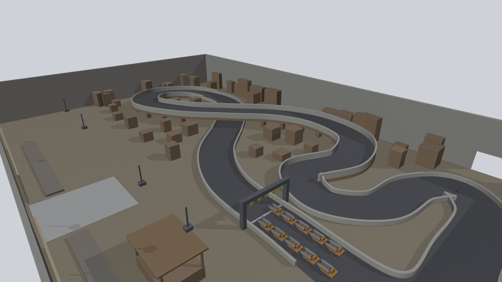

IMPACTASSESSMENT
PODRACEN IN HAL 5
MH 2.3 · BLOK 6Dit is het assessment van het karten in Hal 5 van de Star Wars Xperience. We leggen per onderdeel van het format vast wat het direct, indirect en voor anderen betekent, en waarom we welke keuze maken.


1. Concept en scriptToegankelijkheid
Direct: Bezoekers racen 12 minuten op een echte kartbaan, tegen elkaar, in Tatooine stijl.
Indirect: Wie niet kan of wil racen doet minder mee.
Externaliteit: De RAI en omwonenden merken de drukte en het geluid.
Onze keuze: Naast het racen komt er een kijkroute. Het racen blijft echt karten, omdat dat het idee is en een simulatie het niet vervangt.
2. Personages en beeldRepresentatie
Direct: Karts met een podracer look en racekleding in Anakin stijl.
Indirect: De podrace uit de film heeft vooral mannelijke racers, wat het beeld kan versterken dat racen voor mannen is.
Externaliteit: Disney bepaalt hoe de podrace eruitziet. Daar hebben wij geen invloed op.
Onze keuze: Neutrale racekleding voor iedereen en een gemengde crowd op de beamerwand.
3. AI toolsDuurzaamheid
Direct: We bouwen de baan en de beelden in korte tijd met Blender, Claude en Higgsfield.
Indirect: We leren het modelleren minder zelf en hangen af van AI bedrijven.
Externaliteit: Stroom, credits en water van de AI.
Onze keuze: Eerst lage kwaliteit werkbeelden, hoge kwaliteit pas voor de eindbeelden, zodat we alleen verbruiken waar het zichtbaar iets toevoegt.
4. Montage en geluidToegankelijkheid en AI gebruik
Direct: De eindvideo en de projecties op de muren krijgen motoren, wind en een omroeper erbij.
Indirect: Harde beelden en flitsen kunnen afleiden of misselijk maken, vooral bij lichtgevoelige bezoekers.
Externaliteit: De componist van de Star Wars muziek krijgt niets voor het gebruik.
Onze keuze: Rustige projecties zonder flitsen die met de ronde meebewegen. Bij AI beeld zetten we dat het AI is. De muziek gebruiken we voor dit schoolproject met een disclaimer.
5. BronnenAI gebruik
Direct: De podrace is gebaseerd op The Phantom Menace en op onderzoek naar Nederlandse kartbanen.
Indirect: We blijven vastzitten aan hoe Star Wars het wil.
Externaliteit: De makers van de film en de kartbanen die als voorbeeld dienen.
Onze keuze: We noemen bij elke bron wat we ervan gebruiken en nemen kartbanen alleen als voorbeeld, niet als kopie.
6. PublicatieBetrouwbaarheid en privacy
Direct: De opdrachtgevers zien het idee via renders en VR. De eindvideo laat een echte podrace met omgebouwde karts zien.
Indirect: Renders kunnen echter lijken dan ze zijn, waardoor het idee verder uitgewerkt lijkt.
Externaliteit: Omstanders komen tijdens het filmen in beeld zonder dat ze dat gekozen hebben.
Onze keuze: Bij elk beeld staat of het een Blender render of AI beeld is. We vragen vooraf toestemming en houden omstanders onherkenbaar.
7. PersoneelToegankelijkheid en veiligheid
Direct: Er zijn begeleiders nodig op de baan, bij de kleedkamer en in de horeca.
Indirect: Drukke dagen zorgen voor druk op het personeel.
Externaliteit: Een incident raakt ook medewerkers en de RAI.
Onze keuze: Vaste begeleiders op de baan en een briefing voor elke bezoeker. Zo blijft het haalbaar voor de opdrachtgever.
8. De experience zelfDuurzaamheid en veiligheid
Direct: Een baan met brug en tunnel, en beamers die laten voelen alsof je door een groter gebied rijdt.
Indirect: De donkere hal voor de projecties vergroot het veiligheidsrisico op de baan.
Externaliteit: Stroom van projectoren en karts, en geluid.
Onze keuze: Elektrische karts omdat het binnen is, LED lijnen en verlichte barrières langs de baan, en een beamerwand in plaats van een tribune omdat dat goedkoper en veiliger is.